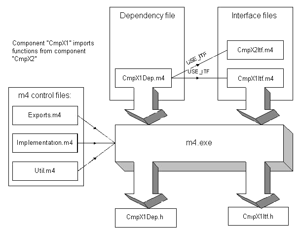

1.2.7. M4 Mechanism¶
To reduce the effort for the generation of the component interface macros, we use the GNU M4 pre-processor. Therefore, two different types of description files must be used:
- *Itf.m4: The interface description file contains all information
- about an interface, that a component provides
- *Dep.m4: The dependency file contains all dependencies on other
- components
From these description files (interface and dependency) the GNU M4 macro pre-processor generates the associated header files, using the three control files Export.m4, Implementation.m4 and Util.m4.
For generating the dependency header file the macro pre-processor accesses all interfaces used. No further file is required for generating the interface header file.
The diagram below illustrates the generation of the header files for component CmpX1, where this component wants to import functions from component CmpX2.
1.2.7.1. Interface description file¶
The interface description file must contain an entry for each function to be exported from the component. Each function must be defined with one of a set of specific keywords. The keywords always have the same structure:
<M4-KEYWORD>(<Return type>, {CDECL | STDCALL}, <Function name>, <Signature> [<LinkToIECApp>={1|0}])
Example for the function Fct1 with prototype int Fct1(int a):
DEF_API(int, CDECL, Fct1, (int a),1,0)
An interface function can be specified with one of the following keywords:
| Keyword | Description |
|---|---|
| DEF_API | C-functions (can be used for external libraries too) In the runtime system we use the convention that a lower case function name indicates that this function can be called from the IEC application. With the lower case we separate C-functions that can be used by other components from the functions that can be used by the IEC program. |
| DEF_STATIC_API | Static C-functions These interface functions cannot be used in the static linkage case. These functions are static and can only be used with dynamic linking and functions pointers. |
| DEF_ITF_API | Singleton classes Most of the classes in the runtime system are singleton classes. They implement one interface and always one instance is available. |
| DEF_STATICITF_API | Static class methods of Singleton classes This is only relevant for C++ implementations. This interface is implemented static, that no instance pointer is required to call this interface function. |
| DEF_CREATEITF_API | Instantiable class constructors This is used for interfaces that are defined once and are implemented only by one class in one component (e.g. all System classes like SysFile)! The return value of a function, that is specified by this keyword, is the handle to the object (class instance) |
| DEF_HANDLEITF_API | Instantiable class methods This is used for interfaces that are defined once and are implemented only by one class in one component! The first parameter of a function, that is specified by this keyword, is the handle to the object (class instance) |
| DEF_CREATECLASSITF_API | Instantiable class constructors This is used for interfaces that are defined once and can be implemented by more than one class in several components! One example is the CmpIoDrv-Interface that can be implemented by more than one I/O-driver. The return value of a function, that is specified by this keyword, is the handle to the object (class instance) |
| DEF_CLASSITF_API | Instantiable class methods This is used for interfaces that are defined once and can be implemented by more than one class in several components! One example is the CmpIoDrv-Interface that can be implemented by more than one I/O-driver. The first parameter of a function, that is specified by this keyword, is the handle to the object (class instance) |
All keywords are expanded by the m4-compile process in the corresponding Itf-header files.
The optional parameter LinkToIECApp indicates whether this function can be linked from an IEC application. If the parameter is not defined, ‘0’ (i.e. not linkable to IEC applications) will be assumed. The above examples are also included in file CmpTemplateItf.m4.
From each entry a function prototype, the definition of the function pointer, and the macros USE_xxx, EXT_xxx, GET_xxx, CAL_xxx, EXP_xxx and CHK_xxx are generated so that the functions can be used in a second module. In addition the signature checksum required by the component manager for registration and import of the function is calculated.
- for declaration of the function pointer (USE_...)
- for declaration of external function pointers (EXT_...)
- for importing (GET_...)
- for calling the function (CAL_...)
- for checking the function pointer (CHK_...)
- for exporting (EXP_...).
The exported component functions should be defined in a uniform manner such that the return value always is an error code. If the function is to return variable values, parameters with pointer to the return value must be used.
The macro pairs are distinguished by the following compiler flags:
- STATIC_LINK: If the components are linked statically, STATIC_LINK
- must be specified in the preprocessor options.
- MIXED_LINK: Must be specified if the components are linked
- statically with the option of expansion through dynamic reloading of further components.
- CPLUSPLUS: Must be specified if the runtime system is to be compiled
- in C++.
- DEFAULT: If no compiler flag is specified, the components later will
- be reloaded as modules.
- <component name>_NOTIMPLEMENTED: Can be used to completely
- deactivate the interface of a component.
- <function>_NOTIMPLEMENTED: Can be used to deactivate individual
- functions of a component.
As an example the function CmpTemplateOpen of component CmpTemplate is examined:
The function declaration can be taken over from the header file into the source code file, where it is also implemented:
RTS_HANDLE CDECL CmpTemplateOpen(char *pszTemplate, RTS_RESULT *pResult);
Function pointer to this function:
typedef RTS_HANDLE (CDECL *PFCMPTEMPLATEOPEN) (char *pszTemplate, RTS_RESULT *pResult);
Macro definition if the whole component or this function is to be deactivated:
#if defined(CMPTEMPLATE_NOTIMPLEMENTED) || defined(CMPTEMPLATEOPEN_NOTIMPLEMENTED)
#define USE_CmpTemplateOpen
#define EXT_CmpTemplateOpen
#define GET_CmpTemplateOpen ERR_NOTIMPLEMENTED
#define CAL_CmpTemplateOpen(p0,p1) (RTS_HANDLE)ERR_FAILED
#define CHK_CmpTemplateOpen FALSE
#define EXP_CmpTemplateOpen ERR_OK
Macro definition for the statically linked runtime system:
#elif defined(STATIC_LINK)
In the statically linked runtime system no function pointers are required.
#define USE_CmpTemplateOpen
The same applies to the external function pointer.
#define EXT_CmpTemplateOpen
In the statically linked runtime system the function pointer import is minimal.
#define GET_CmpTemplateOpen ERR_OK**
The call is made directly as a function call.
#define CAL_CmpTemplateOpen CmpTemplateOpen**
In the statically linked case the function pointer is always present.
#define CHK_CmpTemplateOpen TRUE**
The function pointer does not have to be exported.
#define EXP_CmpTemplateOpen ERR_OK
Macro definition for the runtime system with mixed links:
#elif defined(MIXED_LINK)
The runtime system with mixed links contains elements of the statically and the dynamically linked runtime system. The core components are statically linked, while optional modules can be reloaded.
The core is statically linked, which means that no pointers are required.
#define USE_CmpTemplateOpen
#define EXT_CmpTemplateOpen
The core is statically linked, which means that no function pointers have to be imported.
#define GET_CmpTemplateOpen ERR_OK
The call to the function can also be replaced with a direct function call.
#define CAL_CmpTemplateOpen CmpTemplateOpen
Not required either
#define CHK_CmpTemplateOpen TRUE
In order to enable access to the functions of other components for dynamically linked optional components, the component manager must be notified of the function pointer.
#define EXP_CmpTemplateOpen s_pfRegisterAPI( "CmpTemplateOpen", (void *)CmpTemplateOpen, 0, 0)
Definition for the C++ runtime system (statically linked):
#elif defined(CPLUSPLUS)
No function pointers are required since the C++ runtime system is also statically linked:
#define USE_CmpTemplateOpen
#define EXT_CmpTemplateOpen
The import of function pointers is also minimal
#define GET_CmpTemplateOpen ERR_OK
In the C++ runtime system function calls correspond to method calls.
#define CAL_CmpTemplateOpen ((ICmpTemplate*)s_pfCreateInstance(CLASSID_CCmpTemplate, NULL))->ICmpTemplateOpen
Before the call the existence of an object for the class must be verified:
#define CHK_CmpTemplateOpen (s_pfCreateInstance != NULL)
The export of functions is also minimal
#define EXP_CmpTemplateOpen ERR_OK
Definition for the dynamically linked runtime system:
#else /* DYNAMIC_LINK */
If a function is to be used, the function pointer must be declared with the USE macro:
#define USE_CmpTemplateOpen PFCMPTEMPLATEOPEN pfCmpTemplateOpen;
Declaration of an external function pointer
#define EXT_CmpTemplateOpen extern PFCMPTEMPLATEOPEN pfCmpTemplateOpen;
The function pointer fetches the GET macro via the GetApi function of the component manager:
#define GET_CmpTemplateOpen s_pfGetAPI( "CmpTemplateOpen", (void **)&pfCmpTemplateOpen, 0)
A function pointer is used for the call:
#define CAL_CmpTemplateOpen pfCmpTemplateOpen
Before each call the validity of the function pointer should be verified.
#define CHK_CmpTemplateOpen (pfCmpTemplateOpen != NULL)
During export a function pointer is registered in the component manager.
#define EXP_CmpTemplateOpen s_pfRegisterAPI( "CmpTemplateOpen", (void *)CmpTemplateOpen, 0, 0)
#endif
1.2.7.2. Dependency description file¶
The file starts with a comment containing a textual description of the component. The tags defined above should be used.
1. SET_COMPONENT_NAME(`<name of component').
// Sets the name for this component
2. COMPONENT_SOURCES(`<source file>')
// Specifies the source file for this component.
3. IMPLEMENT_ITF(`<relative path to interface file>.m4').
// This entry specifies which interface this component implements.
// This entry is used to generate an #include statement for the
// associated header file and the EXPORT_STMT macro, which should
// be called in the ExportFunctions function and which registers
// the interface functions in the component manager.
4. USE_ITF(`<relative path to interface file>.m4').
// These entries specify interfaces from which functions are
// imported. They are mainly used to generate #include statements
// for the associated header files. The component manager also
// needs this information for checking the signatures of the
// imported functions.
5. REQUIRED_IMPORTS(`<function1>', `<function2>', ...)
// This is used to generate the IMPORT_STMT macro. The component
// must call this macro in the ImportFunctions function. The
// specified functions are then imported by the component manager.
// If an error occurs an appropriate message is written into the
// log, and ExportFunctions is terminated with an error.
6. OPTIONAL_IMPORTS(`<function3>', ...)
// Specifies non-critical functions for import, i.e. the component
// is executable without these functions. Special assert macros
// (see below) can be used to restrict this function.
// This macro also extends IMPORT_STMT with associated
// instructions.
7. ASSERT_ONE_OF(<A>,<B>,<C>, ...)
// At least one of the specified functions must exist.
CmpTemplateDep.m4 is illustrated as an example below:
Component name:
SET_COMPONENT_NAME(`CmpTemplate')
Source file for the component:
COMPONENT_SOURCES(`CmpTemplate.c')
Interfaces implemented by this component:
IMPLEMENT_ITF(`CmpTemplateItf.m4',`CmpEventCallbackItf.m4')
Interfaces from which this component imports functions:
USE_ITF(`CmpLogItf.m4') USE_ITF(`CmpSrvItf.m4') USE_ITF(`CmpBinTagUtilItf.m4') USE_ITF(`SysTaskItf.m4') USE_ITF(`SysMemItf.m4') USE_ITF(`CmpSettingsItf.m4') USE_ITF(`CmpAppItf.m4') USE_ITF(`CmpEventMgrItf.m4')
Functions that must be imported:
REQUIRED_IMPORTS( LogAdd, ... SysMemAllocData)
Functions that can be imported optionally:
OPTIONAL_IMPORTS( ServerRegisterServiceHandler, ServerUnregisterServiceHandler, . . . EventOpen, EventClose, EventRegisterCallbackFunction, EventUnregisterCallbackFunction)